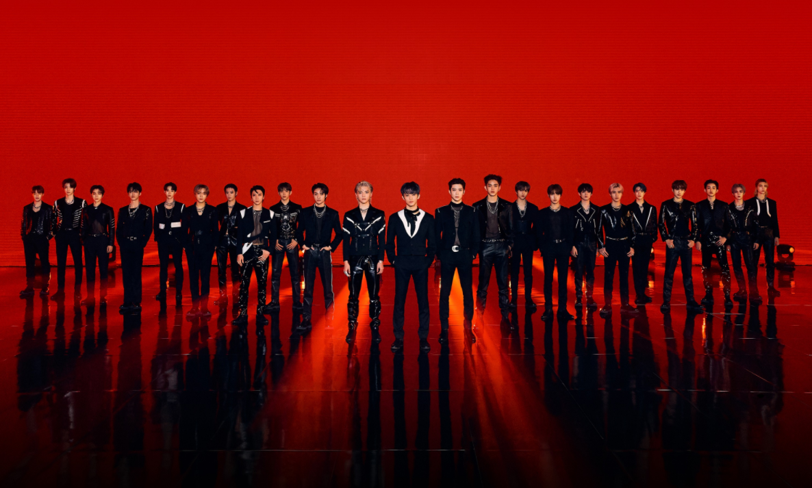
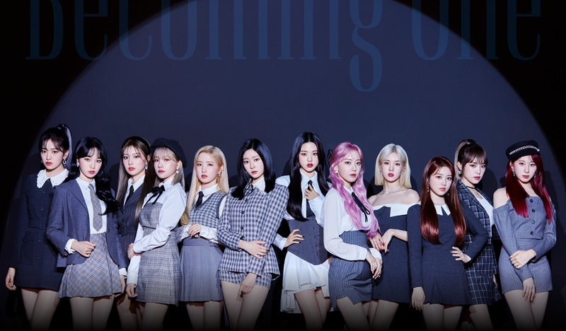

自己紹介
| 名前 | 田中日菜 |
|---|---|
| 大学 | 長岡技術科学大学 |
| 課程 | 機械創造工学課程４年 |
| 研究室 | 結晶工学研究室 |
| サークル | 技大祭実行委員会 |
研究内容
テーマ：MgO結晶の原子レベル平坦化加工
ダイヤモンド半導体基板は他素材の半導体に比べ高い物性値を持っている．
ダイヤモンド半導体基板の実用化によって，各種デバイスの効率化と小型化，低損失化を促し，地球環境への負担軽減を実現する．
ダイヤモンド半導体基板の製作手法として基板の大型化が可能な化学気相成長法を用いるが，下地基板に異なる素材を使うため格子定数等の不一致により
ダイヤモンドの結晶性が悪化する．改善案として新たなIr成膜法の検討，下地基板の原子レベル平坦化及びステップ・テラス化が挙げられる．
これらを最適化することで結晶性を改善し，大型で高品質なダイヤモンド半導体基板を作製することが本研究の目的である．
好きなものランキング
好きなカレー屋さん
| 1位 | ヒマール |
|---|---|
| 2位 | ナンハウス |
| 3位 | 二サン |
好きな犬種
| 1位 | 柴犬 |
|---|---|
| 2位 | シベリアンハスキー |
| 3位 | コーギー |
趣味
私の趣味はアイドルの追っかけです．
そんな私がおすすめするアイドルグループを紹介します．
NCT
現時点で総勢23人の超大型ボーイズグループ．こんだけいたら一人くらい微妙な人がいてもいいのに全員国宝級イケメン． いつも全員で活動しているわけではなく，『NCT 127』や『NCT Dream』，『NCT U』など様々なユニットに分かれて活動している.人多すぎて覚えられない！ ということはなくいつの間にか覚えているし，いつの間にか全員好きになっている．ぜひ自分だけの推しを見つけてください
I*ZONE
オーディション番組『PRODUCE48』からデビューした，上位12人で構成されたガールズグループ．2021年4月に2年半の活動に幕を下ろした． 期限付きの活動の中で，数々の伝説を残した最強のグループ．解散コンサートは涙なしでは見れない． 日本人メンバーも3人在籍していた．日本語の楽曲はあの秋元が作っている．
JO1
オーディション番組『PRODUCE101 JAPAN』からデビューした，上位11人で構成されたボーイズグループ．番組名の通り日本のアイドルグループである． 歌やダンスは，日本のアイドルグループとは思えないほどのクオリティの高さ．韓国の音楽番組にも出演し，グローバルなトップアイドルを目指している． 歌やダンスだけでなく，バラエティーにも強い．気になった方はぜひ『JO1 HOUSE』を見てほしい．一生笑える．